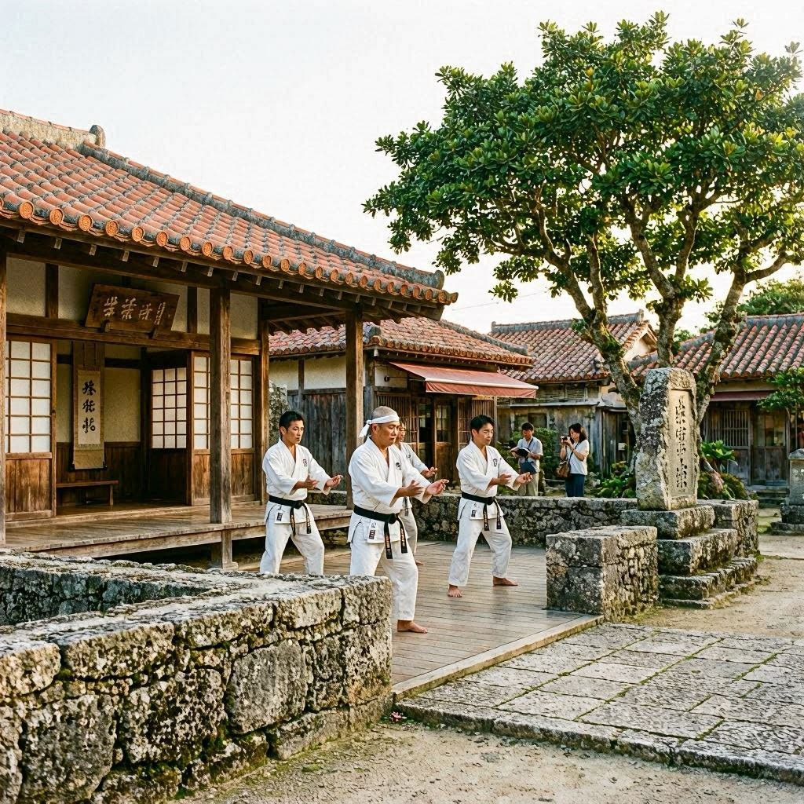
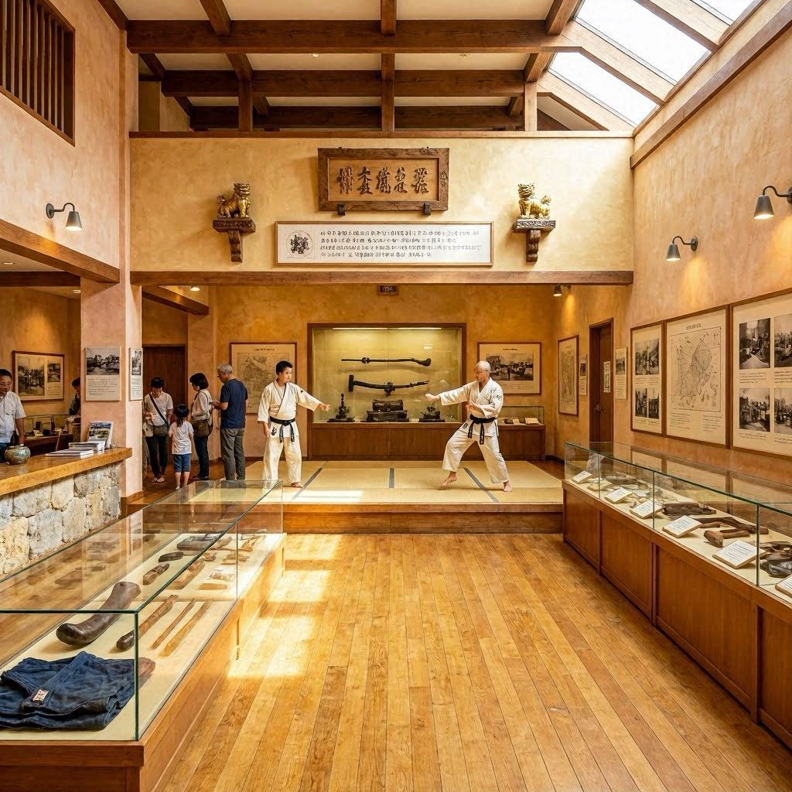
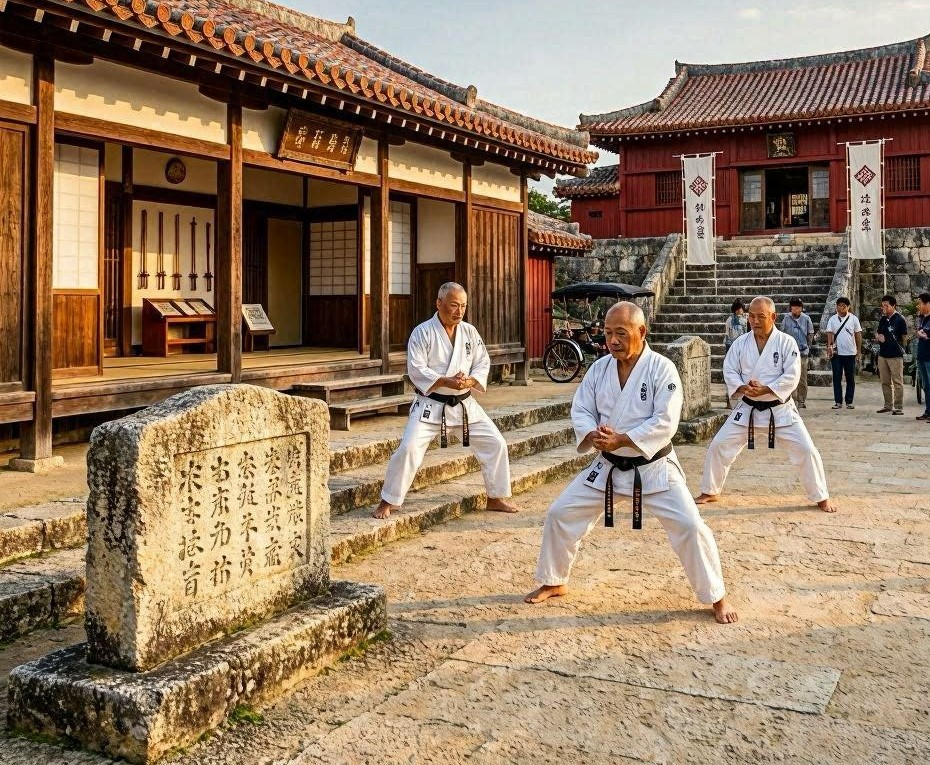
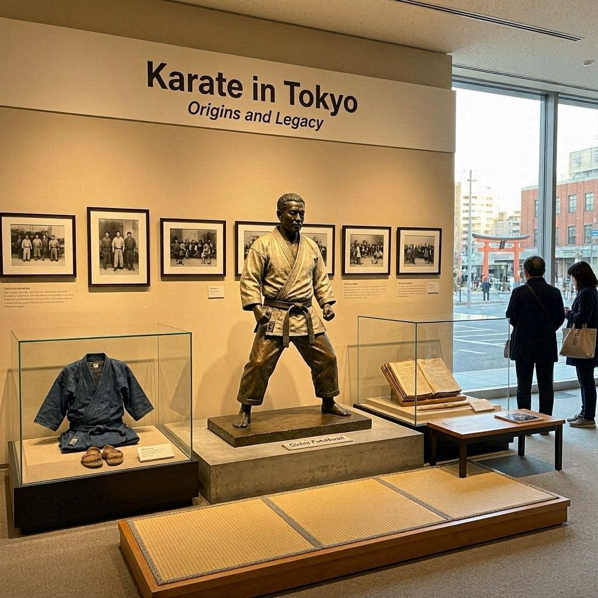
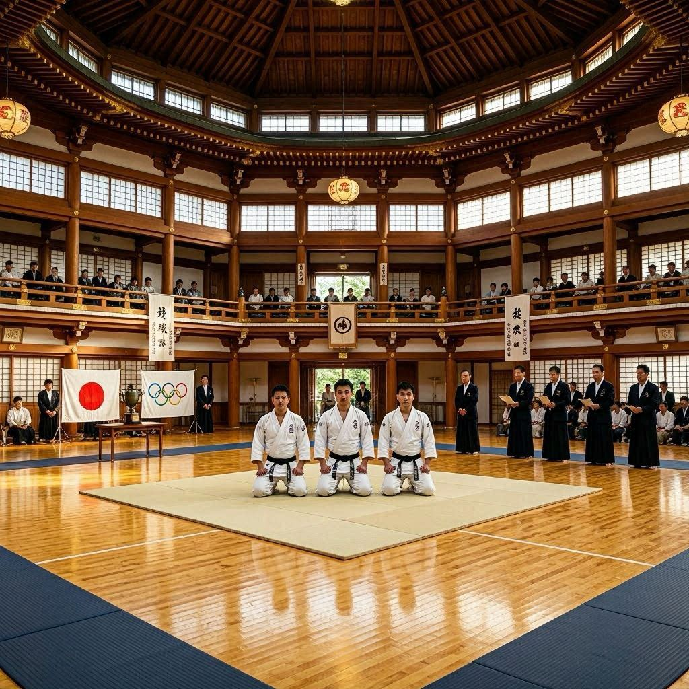
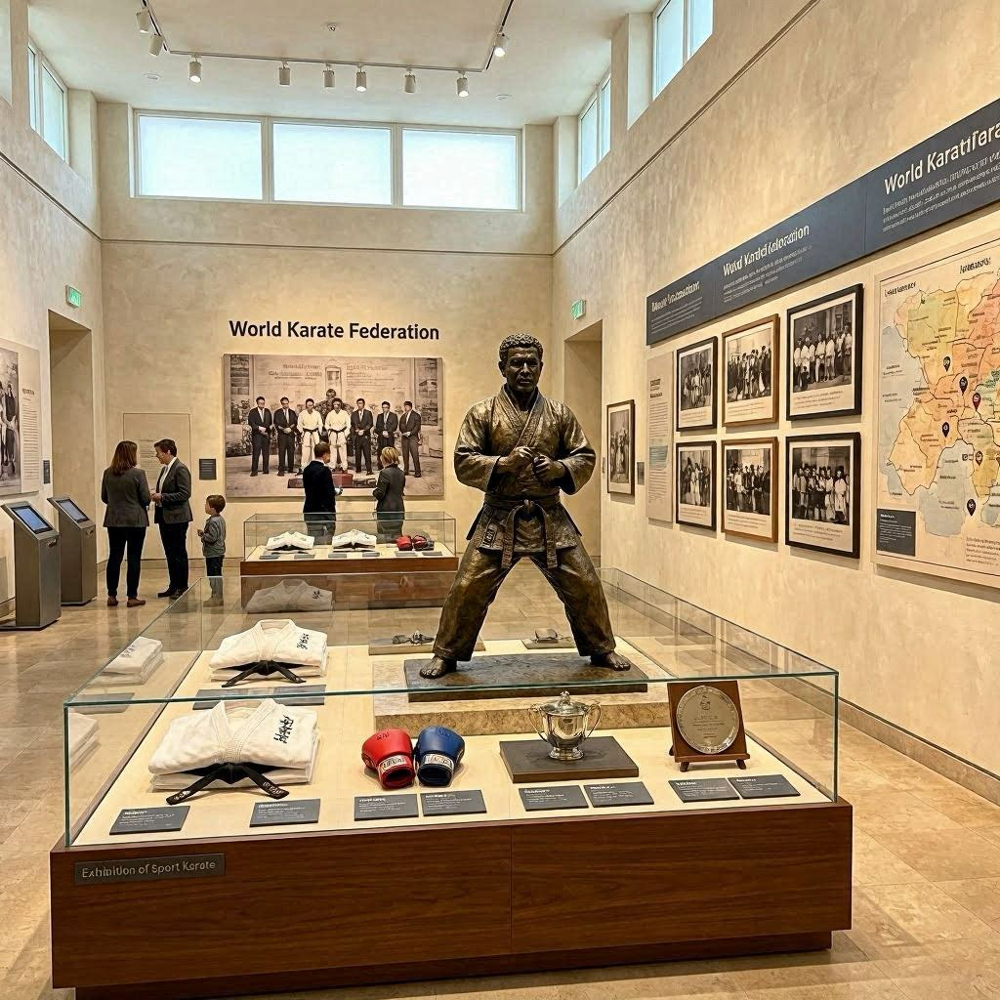
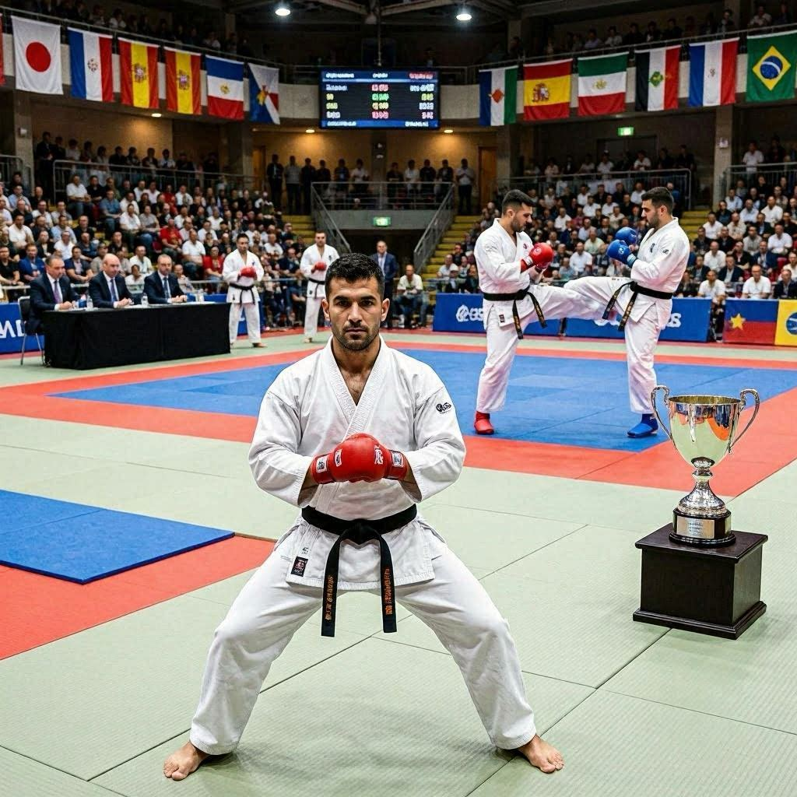
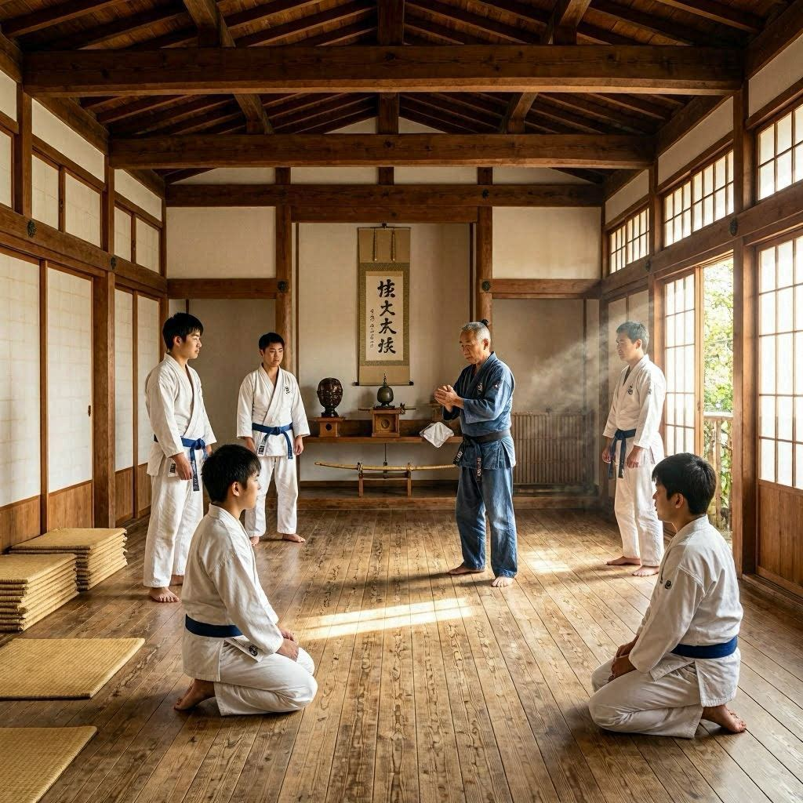

LUGARES POPULARES RELACIONADOS AO KARATÊ
Okinawa, Japão

Considerada o berço do karatê, Okinawa é o local onde a arte marcial se desenvolveu a partir da combinação de técnicas locais de combate e influências chinesas. A região preserva importantes tradições, monumentos históricos, escolas e museus dedicados ao estudo do karatê. Até hoje, praticantes de todo o mundo visitam Okinawa para conhecer suas origens e treinar nos mesmos locais onde grandes mestres construíram os fundamentos da modalidade.
Okinawa Karate Kaikan
Localizado em Okinawa, o Okinawa Karate Kaikan é um dos centros mais importantes dedicados à preservação e divulgação do karatê tradicional. O complexo reúne museu, áreas de treinamento, exposições históricas e eventos internacionais. Visitantes podem conhecer a evolução da arte marcial, observar demonstrações e aprender mais sobre os estilos que surgiram na ilha ao longo dos séculos.

Shuri, Okinawa

Shuri foi a antiga capital do Reino de Ryukyu e desempenhou papel fundamental no desenvolvimento do karatê. Muitos dos primeiros mestres viveram e ensinaram suas técnicas nessa região. O local é conhecido por sua importância histórica e cultural, sendo frequentemente associado ao surgimento de alguns dos principais estilos da arte marcial. Hoje, é um destino muito procurado por estudiosos e praticantes.
Tóquio, Japão
Tóquio foi a cidade responsável pela expansão do karatê para todo o Japão. Foi ali que Gichin Funakoshi apresentou oficialmente a arte marcial em 1922, iniciando um processo de popularização que transformaria o karatê em um fenômeno mundial. Atualmente, a cidade abriga importantes federações, universidades e dojos que continuam contribuindo para o crescimento da modalidade.

Budokan de Tóquio

O Nippon Budokan é uma das arenas mais tradicionais das artes marciais japonesas. Conhecido por sediar competições, demonstrações e eventos históricos, tornou-se um símbolo da preservação das tradições marciais do Japão. O local também ganhou destaque internacional ao receber disputas de karatê durante os Jogos Olímpicos de Tóquio.
Sede da World Karate Federation (WKF)
A World Karate Federation é a principal entidade responsável pela regulamentação do karatê esportivo mundial. Sua atuação foi essencial para a organização de campeonatos internacionais e para o reconhecimento da modalidade em grandes eventos esportivos. A organização representa milhões de praticantes e desempenha um papel importante na promoção dos valores e da cultura do karatê.

Campeonato Mundial de Karatê

Embora não seja um local fixo, o Campeonato Mundial de Karatê é um dos eventos mais importantes da modalidade. O último aconteceu no Egito. Realizado em diferentes países, reúne os melhores atletas do mundo em disputas de kata e kumite. O torneio representa o mais alto nível competitivo do esporte e demonstra a força da comunidade internacional do karatê.
Dojos Tradicionais de Okinawa
Os dojos tradicionais espalhados por Okinawa são considerados verdadeiros patrimônios da arte marcial. Muitos deles mantêm métodos de ensino transmitidos por gerações, preservando técnicas, rituais e valores históricos. Treinar nesses locais é uma experiência única para praticantes que desejam se conectar diretamente com as raízes do karatê.
